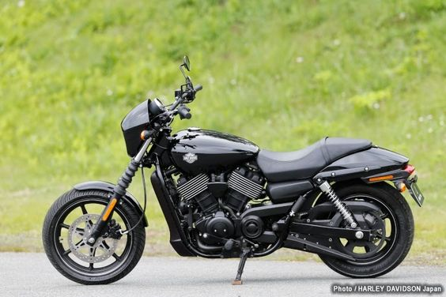

Harley Davidson Iron 883
- The Harley-Davidson Iron 883 is a cruiser motorcycle known for its distinctive, stripped-down design and raw, industrial look.
- Powered by an air-cooled, Evolution V-Twin engine with a displacement of 883cc, the Iron 883 offers a smooth and responsive ride suitable for both city streets and highways.
- It features a comfortable riding position with mid-mounted foot controls and a low-slung seat, providing a relaxed and enjoyable riding experience.
- The Iron 883 is highly customizable with a wide range of Harley-Davidson accessories and parts, allowing riders to personalize their bikes to suit their style and preferences.
- Positioned as an entry-level Harley-Davidson model, the Iron 883 is popular among riders for its blend of style, performance, and affordability, carrying on the legacy of the Harley-Davidson Sportster line.
- Price in Nepal: Rs. 45,85,000

Harley Davidson Street 750
- The Harley-Davidson Street 750 is a versatile and approachable urban cruiser designed for city streets and urban environments.
- Powered by a liquid-cooled, Revolution X V-Twin engine with a displacement of 749cc, the Street 750 offers a smooth and efficient performance.
- It features a modern, minimalist design with blacked-out finishes, a teardrop fuel tank, and a low seat height, providing a comfortable and stylish riding experience.
- The Street 750 is easy to handle and maneuver, making it ideal for navigating through traffic and tight spaces in urban settings
- With its affordable price point and iconic Harley-Davidson branding, the Street 750 is popular among riders looking for a practical yet stylish entry into the Harley-Davidson lineup.
- Price in Nepal: Rs. 23,00,000
Harley Davidson Street Rod 750
- The Harley-Davidson Street Rod 750 is a performance-oriented urban cruiser designed for agile handling and spirited riding.
- It is powered by a high-output Revolution X V-Twin engine with a displacement of 749cc, delivering strong acceleration and dynamic performance.
- The Street Rod 750 features a sporty and aggressive design, with a taller stance, inverted front forks, and a distinctive cafe racer-inspired tail section.
- With its sporty riding position, the Street Rod 750 offers enhanced control and maneuverability, making it well-suited for urban environments and twisty roads.
- The Street Rod 750 combines performance, style, and affordability, making it a popular choice among riders looking for a dynamic and engaging riding experience.
- Price in Nepal: Rs. 27,00,000
Contact Details:
Instagram:@jawamotorcycles.np
Phonenumber:9849657758